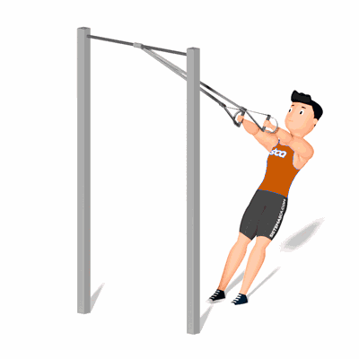

Remada Fechada no TRX

Esse exercício é uma opção para treinar os músculos das costas como o grande dorsal, trapézio, redondos e romboides. Ele pode ser feita por alunos iniciantes e avançados pois o ajuste da carga é muito simples.
Ficha Técnica
Tipo: Funcional
Grupo Muscular: Costas
Aparelho: Nenhum
Músculos: Nenhum
Como realizar
- Agarre as fitas com as palmas viradas uma para a outra e incline seu corpo para trás, trazendo o peso para os calcanhares;
- Permaneça com os braços estendidos para frente, no formato de uma diagonal;
- Dobre os cotovelos e puxe, alinhando as mãos ao tórax, em movimento de uma remada;
- Retorne à posição inicial e repita os movimentos.
 RC STORE
RC STORE